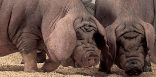
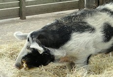
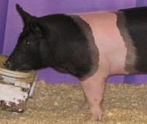
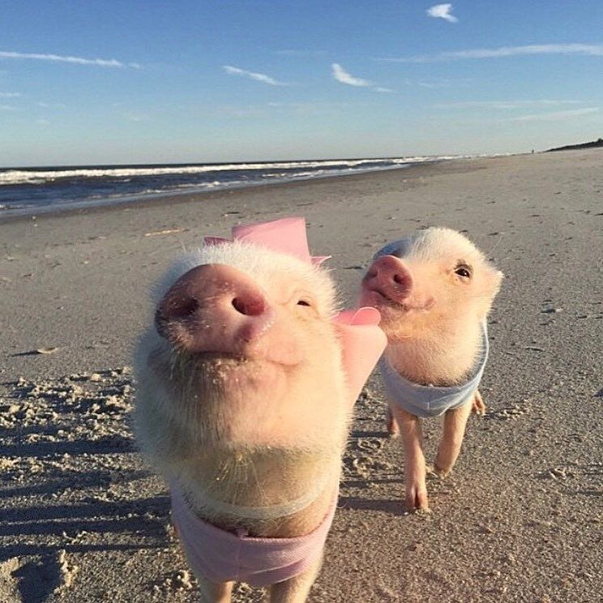

🐷 6 พันธุ์หมูน่ารัก
ถ้าเเฟนคุณบอกว่า “ตุตะเหมือนหมูเลย”
ลองเลือกดูจาก
6 พันธุ์หมูสุดคิ้วท์ ที่นี่สิเเล้วไปตอบว่าเหมือนหมูไหน

ลาร์จไวท์
ตัวใหญ่ สีชมพูขาว ลำตัวเรียวยาว เป็นหมูพันธุ์ยอดนิยมในฟาร์ม

ดูร็อคเจอร์ซี่
ขนสีน้ำตาลแดง หูห้อย นิสัยสงบ โตไว เหมาะเลี้ยงกลางแจ้ง

เบอร์กเชียร์
ขนดำปลายขาว เนื้อคุณภาพดี นุ่มอร่อยจนเป็นที่นิยม

เหมยซาน
หมูจีนจิ๋ว น่ารักมาก ตัวเล็ก อ้วนกลม และเป็นมิตร

สปอร์เต็ดโปแลนด์ไชน่า
ลายจุดสีขาวดำ หูใหญ่ หางสั้น ดูกวนแต่ใจดี

โปแลนด์ไชน่า
หมูขนดำ หูปิดตา เนื้อชั้นเลิศ และมีความอ่อนโยนมาก
🎁 หมูเลือกให้: ของขวัญวันครบรอบ
คัดหมูสายละมุน ซื้อเอาใจให้เเฟนกินแบบจัดเต็ม (จะได้ไม่โกรธที่เรียกหมูอิอิ)
🐷 หมูเเบ่งเป็น 3 ประเภท
ประเภทมัน : ประเภทเนื้อ : ประเภทเบคอน
แหล่งอ้างอิง: 1. FAO Livestock Report 🐖 2. The Pig Site 🐽 3. Pig Breeds Info
ความคิดเห็นส่วนตัวเกี่ยวกับน้องหมู
หมูเป็นสัตว์ที่น่ารักและฉลาดมากๆ น้องๆ ชอบกิน ชอบเล่น และมีอารมณ์ขันสุดๆ ยิ่งพันธุ์เหมยซาน น่ารักจนอยากเลี้ยงไว้ที่บ้านเลย เเละที่สำคัญน้องอร่อยมาก อร่อยขนาดนี้ให้หยุดกินได้ไง 💖🐽

664281043 พงศกร บัวสะอาด 66/50